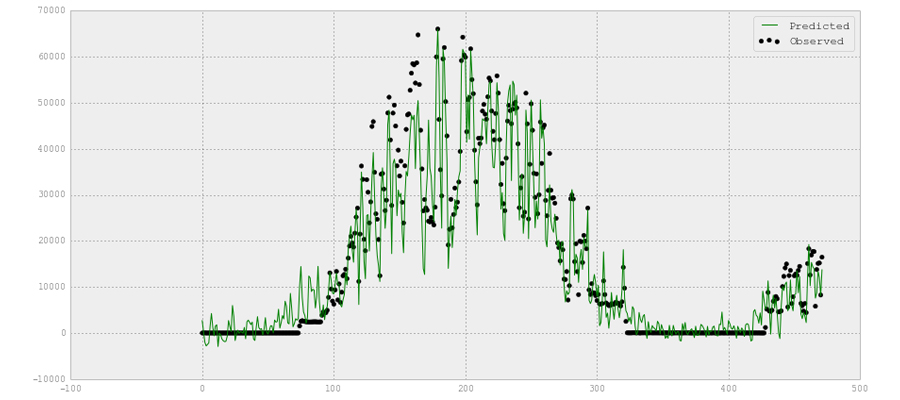
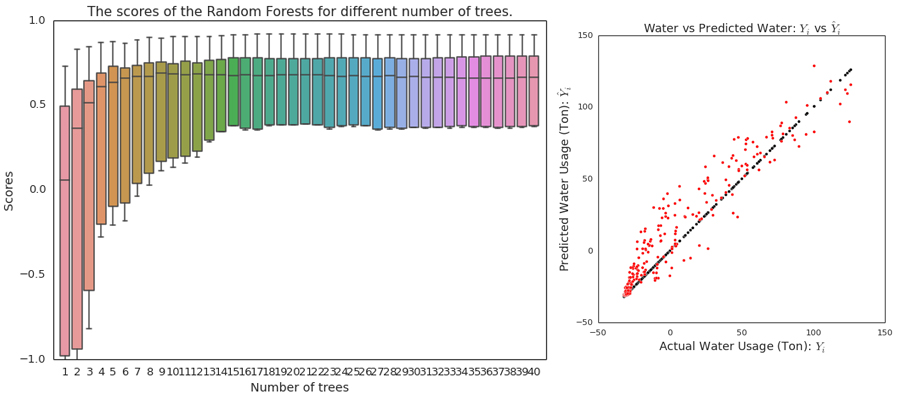
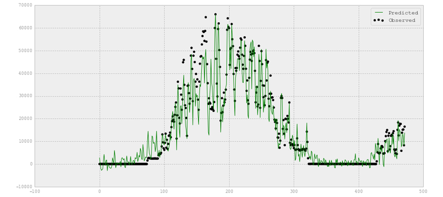
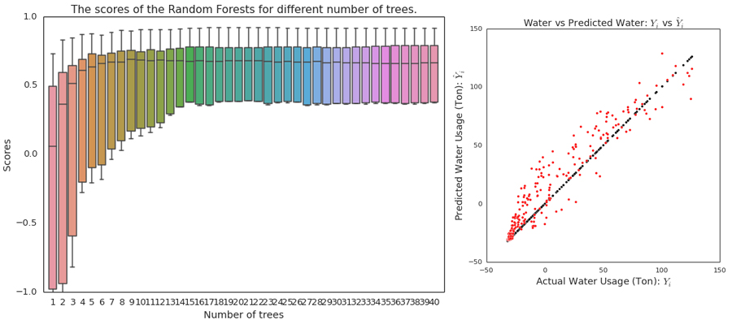

Prediction of Buildings Energy Consumption
Bin Yan, Constant Wette and Wen Xie


 



Motivation
The issue of energy performance of buildings is of great concern to building owners nowadays as it translates to cost. According to the U.S. Department of Energy, buildings consume about 40% of all energy used in the United States. Some states and municipalities have adopted energy savings targets for buildings in an effort to reduce air pollution and climate change in urban areas as well as regionally and globally.
In this project, we apply five machine learning models on weather data, time data and historical energy consumption data of Harvard campus buildings to predict future energy consumption. Submeters and sensors are installed in these buildings for the measurements of hourly and daily consumption of three types of energy: Electricity, Chilled Water and Steam.
Machine learning models produce accurate energy consumption forecasts and they can be used by facilities managers, utility companies and building commissioning projects to implement energy-saving policies. For university facilities, if they can predict the energy use of all campus buildings, they can make plans in advance to optimize the operations of chillers, boilers and energy storage systems.
Screencast
Data Collection
We obtained hourly weather data from two different sources, a weather station located on Harvard campus and purchased weather data from weather stations located in Cambridge, MA. These weather data contains extremely detailed weather datasets including outdoor temperature, humidity, wind speed, wind direction, solar radiation, atmospheric pressure, dehumidification, etc.
Hourly and daily energy consumption data for electricity, chilled water and steam were downloaded from Harvard Energy Witness website. These files contains cumulative submeters readings and a lot of information that needed to be clean up.
Finally, we calculated the time data which include the hour of day, day of week, day of year, week of year, coshour=cos(hour of day * 2pi/24), and estimates of daily occupancy based on academic calendar. A different occupancy factor is assigned to school days, weekends and holidays.
The process of collecting, cleaning and reformating the data collected required extensive work and it is well documented in the ipython notebook .
Exploratory Data Analysis
Before designing the energy prediction model, we had analyzed the collected data to discover some interesting findings that we would then explore further.
These preliminary results are described . More details can be found in
The Prediction model
We collected the data for one building and divided it into training and test sets. For each machine learning model, we trained the model with the train set for predicting energy consumption and used the test set to verify the prediction model.
Once we figure out the most effective machine learning model, the most influential features, the most suitable parameters using the data of one building, this trained model could be used to predict energy consumption of another building of similar type: similar HVAC system, similar room space, room type(office or labs).
Machine learning methods
Summary and Conclusion
Our findings indicate that Gaussian Process Regression outperforms other methods. Click on to learn about more key findings.